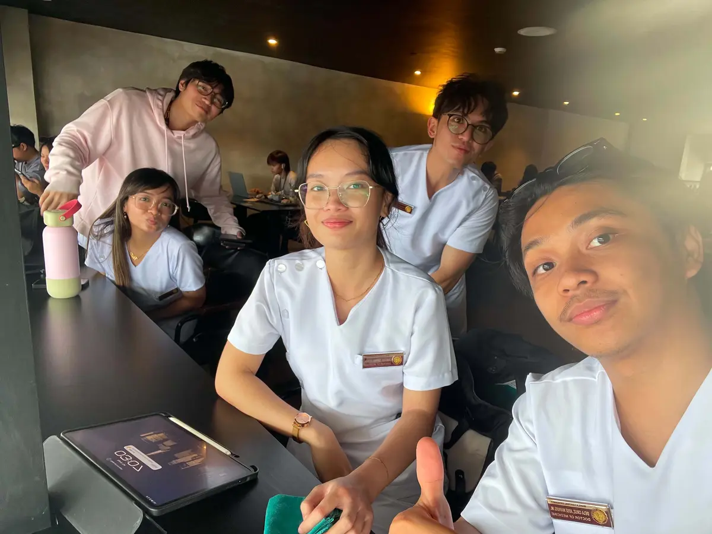
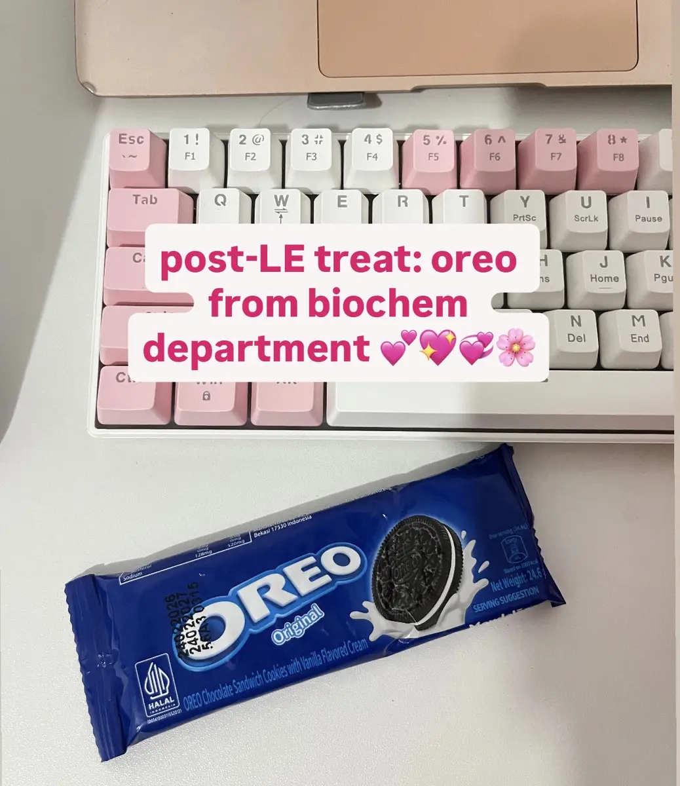
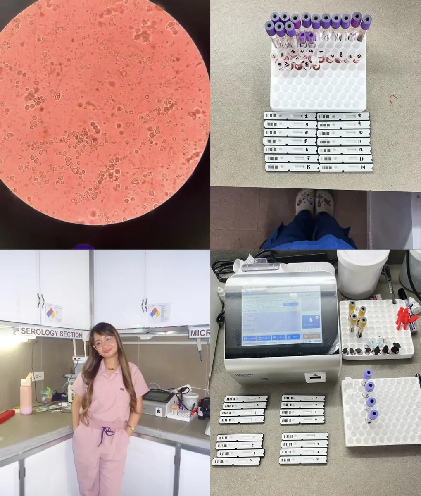

BS Medical Laboratory Science
Our Lady of Fatima University, Valenzuela
A scientific foundation built on accuracy, analysis, and responsibility.Originally from Subic, Zambales
I am Angelica Faith B. Idanan, a Registered Medical Technologist and first-year medical student.
I earned my degree in Medical Technology from Our Lady of Fatima University in Valenzuela and later passed the Medical Technologist Licensure Examination. Working for a year as a Chief Medical Technologist gave me valuable experience in laboratory medicine, patient care, and healthcare teamwork.
That experience strengthened my appreciation for accurate diagnosis and compassionate care. I chose to pursue Doctor of Medicine to connect my foundation in laboratory science with my goal of serving patients more fully as a physician.
Foundations
Our Lady of Fatima University, Valenzuela
A scientific foundation built on accuracy, analysis, and responsibility.Manila Central University College of Medicine
Expanding laboratory knowledge into clinical understanding and compassionate care.Field notes
These experiences are arranged in the same journal format as the learning entries, showing how each moment adds another layer to my medical formation.
My year in laboratory practice taught me that every result carries responsibility. Accuracy, patient safety, and teamwork are not abstract standards. They directly shape the quality of care a patient receives.
Working closely with patients and healthcare professionals also strengthened my desire to understand the clinical story behind every laboratory value.
Water and pH initially challenged me because of the many concepts and equations. With time, I began to see how buffers, fluid balance, and pH help maintain homeostasis.
These ideas become clinically meaningful in dehydration, vomiting, diarrhea, and acid-base disorders. Biochemistry helps me connect laboratory findings with what is happening inside the patient.
Long hours of reviewing, sharing notes, explaining difficult concepts, and encouraging one another made the demands of medicine feel lighter.
Between coffee, stressful nights, laughter, and small victories, I learned that teamwork and perseverance are also part of becoming a physician.



Prelim chapters
Select an entry to open the full reflection.
Quiz 1 tested my adjustment to Biochemistry. Passing Quiz 2 showed me that effort, consistency, and learning from mistakes can turn difficulty into progress.
The experience encouraged me to focus on understanding concepts instead of simply memorizing them.
This discussion connected my experience with CBC results to the biochemistry of hemoglobin, myoglobin, oxygen transport, and iron.
I now understand that anemia is more complex than a single low value. Hemoglobin, hematocrit, MCV, and MCH can offer clues about its underlying cause.
Open-ended questions invite patients to share their symptoms, concerns, and experiences more completely while helping them feel heard.
Practicing with my groupmates and doctor facilitator reminded me that asking the right question and listening genuinely can change how well we understand a patient.
Determining protein primary structure was difficult, but working through it and passing Quiz 4 strengthened my confidence.
Proteins support enzymes, hormones, antibodies, and countless essential processes. The challenge showed me that consistent effort makes complex ideas manageable.
Learning their structures and oxygen-binding properties gave me a deeper view of values I once encountered mainly through CBC results.
Discussion with my group and facilitator made the science more engaging and clarified its clinical importance.
My long exam and prelim journey challenged my confidence, but it also taught me to keep improving, learn from mistakes, and understand each lesson more deeply. Every setback can become an opportunity to return stronger.
A memorable part of our examinations was receiving pencils and Oreos from the Biochemistry Department. It was a simple but thoughtful reminder that our professors understood the pressure and were supporting us through it.
I may be struggling now, but I will keep moving toward the physician I hope to become. Angelica Faith B. Idanan, RMT
MD 1-1 · Biochemistry E-Portfolio
©
Angelica Faith B. Idanan, RMT
MD 1-1 · Biochemistry E-Portfolio
©